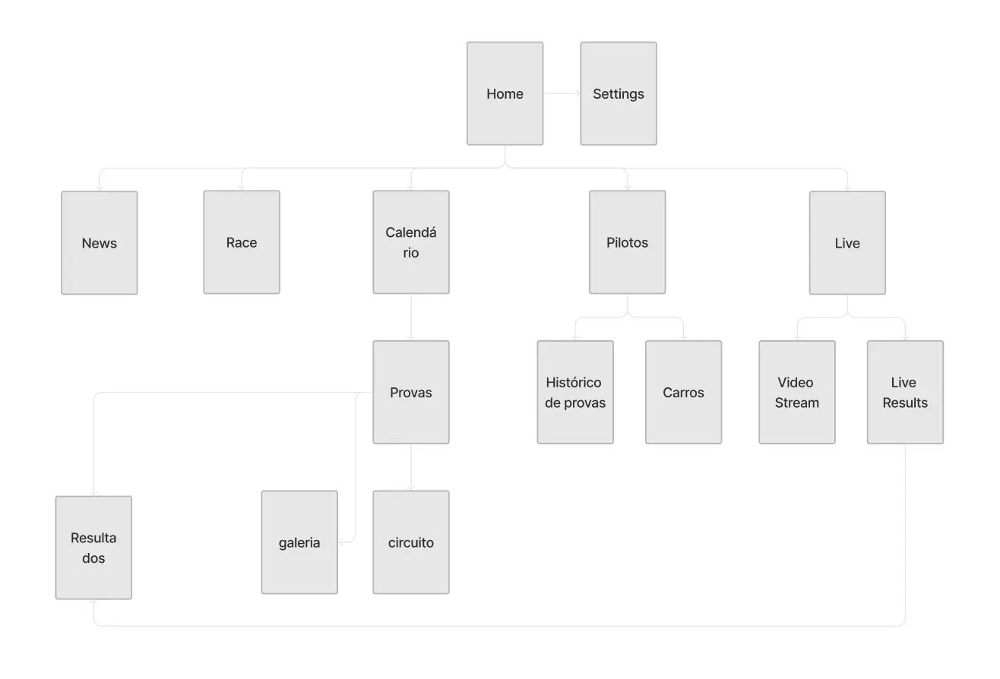

Desporto motorizado · App móvel
Porsche Sprint Challenge Ibérica
A app oficial do campeonato: transmissões em direto, resultados em tempo real, gestão de documentos para pilotos e equipas e comunicação direta da direção de prova.

A versão curta
A operação do campeonato dependia de esforço humano para compensar lacunas tecnológicas: documentos validados por WhatsApp, avisos por telefone e nenhum lugar central para os fãs viverem a temporada.
Pesquisa e definição do âmbito do MVP, wireframes e design visual.
Uma app com direto multicâmara, checklist de documentos, notificações oficiais, calendário, galeria e um backoffice para importar dados de corrida.
Visão geral
Sobre o PSCI
O Porsche Sprint Challenge Ibérica é um dos principais campeonatos monomarca da Península Ibérica. Sucessor da antiga GT3 Cup, afirmou-se como a plataforma ideal tanto para jovens talentos em ascensão como para pilotos amadores («gentlemen drivers») que procuram o mais alto nível de competição GT.
Sobre a P21 Motorsport (o nosso cliente)
Liderada pelo Series Manager José Monroy, a P21 Motorsport gere o campeonato PSCI, com foco em:
- Gestão desportiva: garantir o cumprimento integral dos regulamentos da FIA e da FPAK/RFEDA.
- Logística do paddock: coordenar o tempo de pista, a disposição do paddock e a hospitalidade premium.
- Media e comunicação: promover os eventos, gerir as transmissões em direto e preservar a imagem da marca Porsche no automobilismo regional.
Objetivos estratégicos
- Centralização operacional: eliminar fluxos manuais, migrando candidaturas e comunicações oficiais para um ambiente seguro e dedicado.
- Envolvimento: aumentar a fidelização dos fãs e o tempo de sessão através de contacto direto e conteúdo exclusivo.
- Dados em tempo real: proporcionar uma experiência imersiva com resultados ao vivo.
- Excelência na jornada do piloto: simplificar a logística de pista para reduzir erros e acelerar as respostas oficiais.
Pesquisa
O que ouvimos dos stakeholders
Para perceber melhor os requisitos antes de desenhar a solução, fizemos entrevistas com os três pilares da operação. O diagnóstico revelou uma dependência crítica do esforço humano para compensar lacunas tecnológicas.
Pontos de dor identificados
Validação manual: os documentos de inscrição (licenças, documentos pessoais, etc.) são tratados por WhatsApp. Com mais de 30 pilotos e equipas por temporada, o histórico de mensagens torna-se impossível de auditar.
Demasiado esforço para comunicar: comunicar horários de entrada em pista (pré-grelha) ou tarefas pendentes depende de esforço físico ou de chamadas telefónicas individuais.
Barreira ao envolvimento: o público sente que não há um lugar central para viver a temporada fora da pista.
Soluções propostas
- Transmissão em direto — multicâmara (pista e on-board), com resultados em tempo real e estatísticas detalhadas para uma experiência imersiva.
- Gestão de documentos (checklist) — um espaço dedicado onde pilotos e equipas carregam documentos e acompanham o estado da validação (Pendente/Aprovado) em tempo real.
- Importação de dados técnicos — centralização de tempos por volta, penalizações e outros dados relevantes da corrida, simplificando a gestão para o promotor do evento.
- Calendário e galeria — acesso rápido ao planeamento da temporada e uma galeria de fotos e vídeos de alta qualidade para envolver os fãs.
- Notificações inteligentes — substituir o WhatsApp por notificações push e alertas oficiais, para que a informação certa chegue à pessoa certa no momento certo.
Análise competitiva
Para perceber os padrões de comunicação e a experiência digital no desporto motorizado, analisámos duas referências: uma por recomendação direta da P21 Motorsport e outra como iniciativa de design, para benchmarking de inovação.
| Funcionalidade | 24H Series | Formula E | PSCI |
|---|---|---|---|
| Direto e resultados | ✓ Sim | ✓ Sim | ✓ Sim |
| Multicâmara / on-board | ✕ Não | ✓ Sim | ✓ Sim |
| Gestão de inscrições (pilotos e equipas) | ✓ Sim | ✕ NãoEstas inscrições são feitas numa plataforma própria da FIA. | ✓ Sim |
| Notificações push (direção de prova e gerais) | ✓ Sim | ✓ Sim | ✓ Sim |
| Galeria | ◐ ParcialExterna | ✓ Sim | ✓ Sim |
| Notícias | ✓ Sim | ✓ Sim | ✓ Sim |
| Perfil de circuito e piloto | ◐ ParcialSó circuito | ✓ Sim | ✓ Sim |
Definição
Arquitetura de informação

Design
Wireframes de baixa fidelidade
Começámos por definir a narrativa e as diferentes hierarquias que iriam compor a nossa app de corridas.

A estrutura da app não foi desenvolvida de forma isolada. Adotámos uma abordagem de design participativo, em que os wireframes foram validados em ciclos contínuos com o Race Manager do PSCI.
Design system
Dada a herança visual e o prestígio da marca, criar uma nova linguagem visual de raiz seria contraproducente. Por isso, a interface da app foi construída inteiramente com base no Porsche Design System (v3).

Layouts finais
Gestão de perfil
Um painel individual para gerir dados pessoais, preferências de notificações e acessos segmentados por tipo de utilizador (Administrador, Piloto, Equipa ou Espectador).

Checklist
Um espaço dedicado para pilotos e equipas gerirem e carregarem as inscrições de cada prova, acompanhando em tempo real o estado de cada submissão.

Direto e resultados
Permite a todos os tipos de utilizador ver as corridas e acompanhar as classificações em tempo real. Inclui vários ângulos de câmara, com a perspetiva de cada piloto (on-boards) e uma visão geral da corrida, para uma experiência imersiva para equipas e fãs.

Pilotos e circuitos
Explorar a grelha de partida com perfis detalhados dos pilotos, especificações técnicas dos carros e informação estratégica das pistas, centralizando num só lugar todo o conhecimento técnico do campeonato.

Gestão de conteúdos da app
Esta plataforma de backoffice (CMS) permite importar de forma rápida e simples os dados das corridas, como tempos por volta, penalizações e outra informação relevante, simplificando a gestão para o promotor do evento.

Calendário da temporada
Acesso rápido ao calendário completo da temporada. Os utilizadores veem datas, locais e a informação essencial de cada prova, simplificando o planeamento de todas as equipas.

Comunicação da direção de prova
O centro de comando digital de pilotos e equipas. Receção imediata de instruções da direção de prova, alertas de entrada em pista e atualizações logísticas, para que ninguém perca um momento crítico da competição.

Momentos inesquecíveis
Uma galeria com fotos e vídeos de corridas anteriores, que dá aos fãs de desporto motorizado uma visão mais ampla e cativante do evento, com momentos incríveis e ação de alta intensidade.

Aprendizagens
Desenhar para dispositivos móveis
Foi a minha primeira app móvel e aprendi a importância crítica dos breakpoints, das safe areas e do tamanho das áreas de toque na iconografia. Passar do design para um produto pronto para produção ensinou-me que a usabilidade móvel exige um rigor técnico muito além do design para desktop.
Lançamento nas lojas de apps
Pela primeira vez, fui responsável por desenhar e gerir os assets para a App Store e o Google Play. Aprendi a adaptar a comunicação visual às diretrizes de cada plataforma e a captar a atenção do utilizador logo na primeira interação.
Colaboração com stakeholders
Trabalhar diretamente com o Race Manager mostrou-me o verdadeiro valor do design centrado no humano. O feedback de quem está «no terreno» é o que distingue uma app visualmente agradável de uma solução que resolve problemas reais de negócio e de operação.